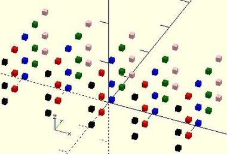
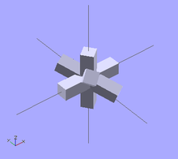
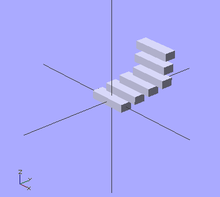

Evaluate each value in a range or vector, applying it to the following Action.
for(variable = [start : increment : end]) for(variable = [start : end]) for(variable = [vector])
parameters
for (a =[3:5])echo(a); // 3 4 5 for (a =[3:0]){echo(a);} // 0 1 2 3 start > end is invalid, deprecated by 2015.3 for (a =[3:0.5:5])echo(a); // 3 3.5 4 4.5 5 for (a =[0:2:5])echo(a); // 0 2 4 a never equals end for (a =[3:-2:-1])echo(a); // 3 1 -1 negative increment requires 2015.3 be sure end < start
for (a =[3,4,1,5])echo(a); // 3 4 1 5 for (a =[0.3,PI,1,99]){echo(a);} // 0.3 3.14159 1 99 x1=2; x2=8; x3=5.5; for (a =[x1,x2,x3]){echo(a);} // 2 8 5.5 for (a =[[1,2],6,"s",[[3,4],[5,6]]])echo(a); // [1,2] 6 "s" [[3,4],[5,6]]
animals = ["elephants", "snakes", "tigers", "giraffes"]; for(animal = animals) echo(str("I've been to the zoo and saw ", animal)); // "I've been to the zoo and saw elephants", for each animal
for() is an Operator. Operators require braces {} if more than one Action is within it scope. Actions end in semicolons, Operators do not.
for() is not an exception to the rule about variables having only one value within a scope. Each evaluation is given its own scope, allowing any variables to have unique values. No, you still can't do a=a+1;
Remember this is not an iterative language, the for() does not loop in the programmatic sense, it builds a tree of objects one branch for each item in the range/vector, inside each branch the 'variable' is a specific and separate instantiation or scope.
Hence:
for (i=[0:3]) translate([i*10,0,0]) cube(i+1);
Produces: [See Design/Display-CSG-Tree menu]
group() { group() { multmatrix([[1, 0, 0, 0], [0, 1, 0, 0], [0, 0, 1, 0], [0, 0, 0, 1]]) { cube(size = [1, 1, 1], center = false); } multmatrix([[1, 0, 0, 10], [0, 1, 0, 0], [0, 0, 1, 0], [0, 0, 0, 1]]) { cube(size = [2, 2, 2], center = false); } multmatrix([[1, 0, 0, 20], [0, 1, 0, 0], [0, 0, 1, 0], [0, 0, 0, 1]]) { cube(size = [3, 3, 3], center = false); } multmatrix([[1, 0, 0, 30], [0, 1, 0, 0], [0, 0, 1, 0], [0, 0, 0, 1]]) { cube(size = [4, 4, 4], center = false); } } }
All instances of the for() exist at the same time, they do not iterate sequentially.
While it is reasonable to nest multiple for() statements such as:
for(z=[-180:45:+180]) for(x=[10:5:50]) rotate([0,0,z]) translate([x,0,0]) cube(1);
instead, all ranges/vectors can be included in the same for() operator.
for ( variable1 = <range or vector> , variable2 = <range or vector> ) <do something using both variables>
example for() nested 3 deep color_vec = ["black","red","blue","green","pink","purple"]; for (x = [-20:10:20] ) for (y = [0:4] )color(color_vec[y]) for (z = [0,4,10] ) {translate([x,y*5-10,z])cube();} shorthand nesting for same result color_vec = ["black","red","blue","green","pink","purple"]; for (x = [-20:10:20], y = [0:4], z = [0,4,10] ) translate([x,y*5-10,z]){color(color_vec[y])cube();}
example 1 - iteration over a vector of vectors (rotation) for(i = [ [ 0, 0, 0], [ 10, 20, 300], [200, 40, 57], [ 20, 88, 57] ]) { rotate(i) cube([100, 20, 20], center = true); }
example 2 - iteration over a vector of vectors (translation) for(i = [ [ 0, 0, 0], [10, 12, 10], [20, 24, 20], [30, 36, 30], [20, 48, 40], [10, 60, 50] ]) { translate(i) cube([50, 15, 10], center = true); }
example 3 - iteration over a vector of vectors for(i = [ [[ 0, 0, 0], 20], [[10, 12, 10], 50], [[20, 24, 20], 70], [[30, 36, 30], 10], [[20, 48, 40], 30], [[10, 60, 50], 40] ]) { translate([i[0][0], 2*i[0][1], 0]) cube([10, 15, i[1]]); }

for() loops nested 3 deep

example 1 for() loop vector of vectors (rotation)

example 2 for() loop vector of vectors (translation)
example 3 for() loop vector of vectors
Created with the Personal Edition of HelpNDoc: Easy to use tool to create HTML Help files and Help web sites